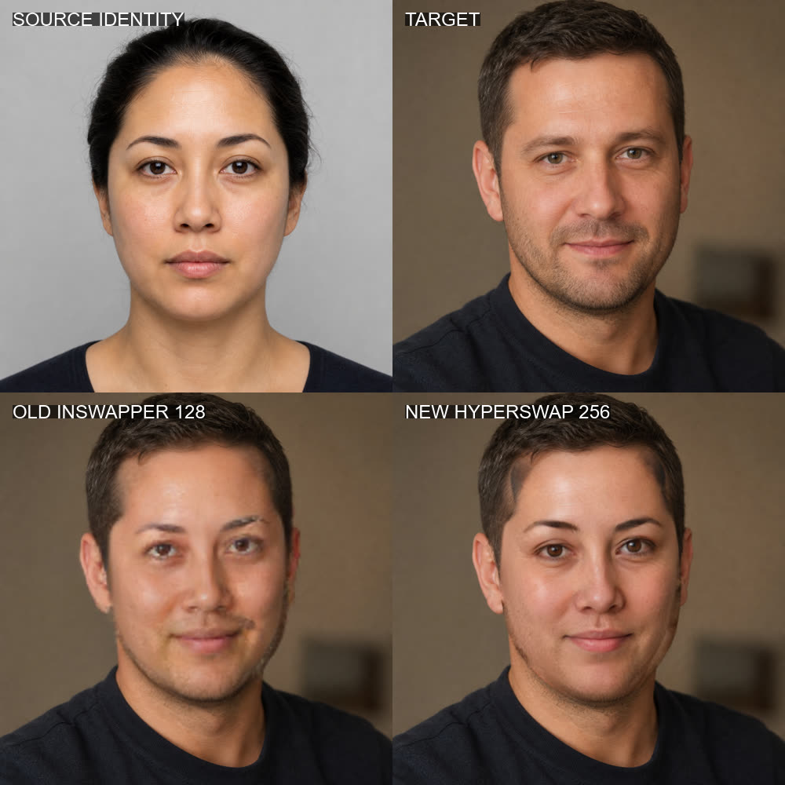
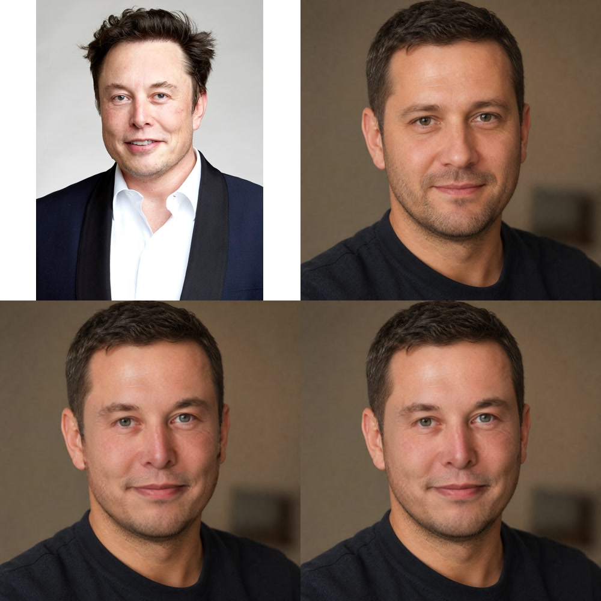
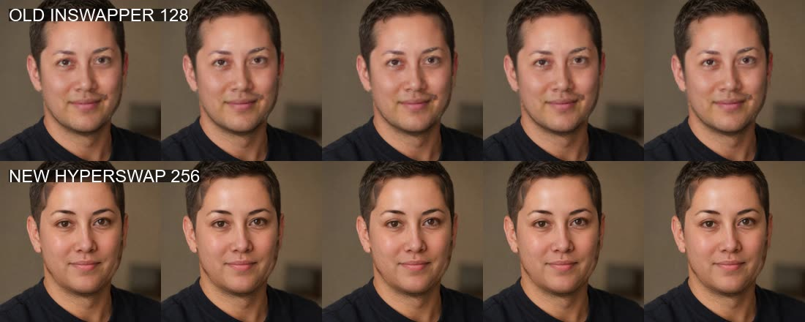

Archived study · 2026-08-27 · Local RTX 4070 evidence
局部换脸已验证，
整头目标需换路线。
我们在同一台Windows笔记本上跑通Deep-Live-Cam和FaceFusion的图片、视频与摄像头链路。结论不是“换脸做不到”，而是传统模型只替换目标头型内部的脸，无法自然解决脸宽、下颌、发际线与头发差异。
技术链路通过图片、视频、CUDA与摄像头均完成
目视质量有边界InSwapper拒绝，HyperSwap仅离线候选
目标重新定义从局部换脸转为肖像驱动或3D头像
当前已归档不继续围绕遮罩和锐化微调
采用结论
Deep-Live-Cam不是“不能运行”，FaceFusion也不是“画质完全不可用”。二者不适合的是我们后来明确的目标：来源与目标脸型差异较大时，仍要把完整人物头部自然替换。
停止继续优化传统局部换脸；保留工程经验，未来从肖像驱动或3D完整头像重新验证。
颜色、锐化、遮罩和身份权重只能改善边缘，无法改变模型在目标五点关键点和目标头部外轮廓中生成脸部的基本架构。
Deep-Live-Cam默认128px模型目视质量拒绝
FaceFusion离线质量更好，但约4.27fps且仍保留目标头型
下一技术类LivePortrait / Gaussian Head / MetaHuman
本机实测
设备为NVIDIA GeForce RTX 4070 Laptop GPU 8GB。所有人物输入除明确署名的公开人物测试外均为虚构成年合成人像；处理在本机完成。
视觉证据
量化人脸相似度只能证明身份特征发生迁移，不能替代肉眼质量判断。下面保留的是足以支持结论的小型对比证据，而不是完整原始输出归档。



代码与模型
分别负责什么
实时头像不是“装一个大模型”就完成。它是一条持续处理的视频管线：模型决定生成范围和身份上限，代码决定输入输出、时序稳定、速度与产品集成。
采集与解码
OpenCV、FFmpeg或WebRTC读取视频、摄像头和音频时间戳。
检测与跟踪
检测人脸、关键点、表情和头部姿态，并在帧间保持同一目标。
模型生成
选择局部换脸、2D肖像驱动、3D头像或整帧生成式重绘。
合成与稳定
处理遮罩、颜色、遮挡、边缘、抖动和跨帧身份一致性。
编码与输出
写入视频，或通过OBS/虚拟摄像头送入会议和直播软件。
局部换脸
来源身份进入目标头型；速度较容易做到实时，但脸型差异越大越别扭。
2D肖像驱动
保留来源肖像外观，让摄像头驱动表情和姿态；更像“来源人物动起来”。
3D Gaussian头像
从单图或短视频重建可驱动完整头部，转头和外轮廓更合理。
生成式视频
可重绘人物、头发和整幅画面，但延迟、身份漂移、费用和隐私需要验证。
重新启动时
看这些候选
候选依据是与目标的匹配度，不是GitHub热度。除已完成的两个项目外，下表均未经过本机验收，不能当作已实现能力。
| 需求 | 候选 | 为什么值得看 | 当前边界 |
|---|---|---|---|
| 本地摄像头驱动来源肖像 | FasterLivePortrait ↗ | 提供摄像头、ONNX和TensorRT路线，最适合下一轮最小验证 | 来源画布驱动不等于在原摄像头身体上无缝换整头 |
| 单图完整3D头部 | LAM ↗ | 从一张图片构建可实时渲染的Gaussian Head Avatar | 公开模型非商业许可；Windows与8GB显存尚未实测 |
| 稳定生产级3D数字人 | MetaHuman ↗ | 普通摄像头可实时驱动完整3D人物，头发耳朵和头型统一 | 需要制作人物资产，不是一张照片的无损真人克隆 |
| 商业实时质量对照 | AKOOL Live Camera ↗ | 云端实时换脸、头像与虚拟摄像头，可快速建立产品上限 | 素材上传、费用、网络延迟、授权与隐私 |
| 离线高质量表演迁移 | Runway Act-Two ↗ | 可迁移表情、说话、头部与身体动作，更适合成片 | 云端非实时，产品时长与费用限制 |
| 实时整帧人物重绘 | Decart Lucy ↗ | WebRTC实时视频到视频，可修改人物和完整画面 | 精准真人身份锁定与端到端延迟必须实测 |
归档与
重新启动条件
研究暂停不等于删除环境经验。保留能够复现结论的代码和小型证据，排除依赖、模型、缓存和无必要的大输出。
现在归档
- Deep-Live-Cam与FaceFusion固定版本、参数和性能数据
- GPU启动器、身份评估和摄像头基准脚本
- 虚构素材说明、公开人物署名和压缩证据图
- 不提交虚拟环境、模型缓存、上游源码和摄像头画面
未来按这个顺序重启
- FasterLivePortrait处理同一个4秒合成动作视频，先判断来源头型是否真正保留。
- 通过后再测摄像头FPS、端到端延迟、显存、侧脸、张嘴和遮挡。
- 接OBS虚拟摄像头验证会议/直播链路和音频同步。
- 若仍不满足，转向LAM/MetaHuman或商业云端产品，不回到FaceFusion遮罩微调。
合成与授权：页面中的Elon Musk测试图为明确标注的合成研究内容，不是真实影像。来源照片作者Debbie Rowe，署名The Royal Society，Wikimedia Commons页面列出CC BY-SA 3.0/4.0。模型许可不等于肖像授权；真实人物使用必须获得许可并清晰标注AI合成。